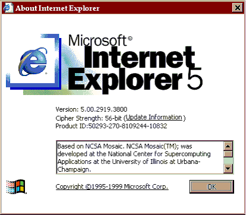
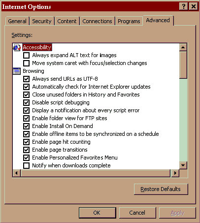
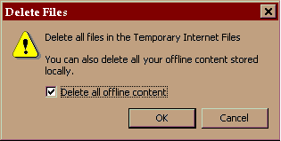
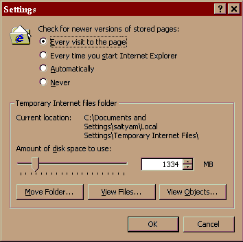

|
|
Frequently Asked Questions
Q. What should I do if I get “JavaScript” Errors with question to “Continue” or “
Start Debug”
after I login to the site?
To solve these problems, you should follow following steps.
1. Make sure that your browser is Internet Explorer 5.0 and above.You can check this by clicking
Help->About Internet Explorer on your browser window.You will get a window like this below.

2. If it is IE5.0 and above, do the next steps.
3. Choose Tools -> Internet Options from top menu in your browser
4. The following boxes have to be checked as shown in the image below.
a. Disable Script Debugging
b. Display a notification about every script Error.

It is recommended that you have Advanced tab looking like the one in picture above.
5. After doing above steps, you should delete all Offline and History contents. This can be done
by choosing Tools -> InternetOptions .
6. In the window opened, click on General tab.
7. Choose Delete Files. In the window opened, SELECT Delete Offline files also.Click on OK

8. Then choose “Settings” in the same tab.
9. Set the “Checked for newer versions of Stored Pages to “Every visit to the page”.

Close the browser and start again. You should be able to login and work now.
|
|
|